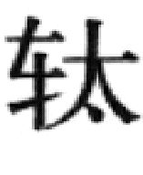
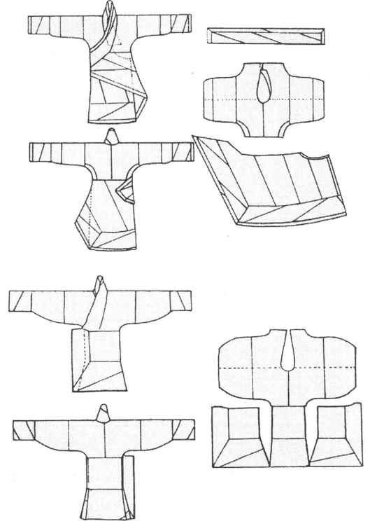
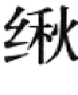

到了距现代二千多年前的春秋时期，中原大地上已经基本形成了以农业经济为主的社会形态。编户农民占了社会人口的绝大部分，他们居住比较固定，迁徙较少，劳动量较大，但不需要长途驰骋或到处奔走，从而形成了中原各诸侯国大致相同的服装式样，即宽松舒适的袍服与裙裳。当时，中原人们已经拥有比较严密、宽敞的房屋，兴建了有一定规模的城市与交通道路。日常居室中，人们在地上铺设了席子与茵褥，跽跪而坐，远行时或者乘车、船，或者步行。中原人穿的袍服、裙裳，正是出于适应这些生活习惯而逐渐定型的。
然而，当历史进入春秋战国之交的时候，诸侯之间的兼并战争日益激烈。铁的普遍使用造成兵器技术的进化，特别是远射程强弩的产生，甲胄护具的使用与兵法的形成等军事新要素改变了战争的方式。大规模的步、骑兵作战取代了传统的车战。这样一来，原先的衣着便显得碍手碍脚，既不便于奔跑、骑马驰骋，又不便于近身格斗。新的战争需要强烈要求改革衣着，成了起决定作用的服装设计师。
在战争的压力下，与游牧民族接邻的一些北方诸侯国注意到北方游牧民族的娴熟马技在战争中的优势，也注意到北方游牧民族的特色服装，即所谓“胡服”。胡服与中原服装相比起来，衣袖窄而细，袍衫紧身，有裤子与皮靴等利于骑马的服装成分，在作战时轻捷方便。因此，地处北方的赵国在中原七国中首先开始了服装改革，同时，这一变革也深入到政治、经济与思想领域里，对中原社会的发展起到了很大的作用。这就是中国历史上著名的一大变革——胡服骑射。
表面看来，这一服装改革主要是为了适应骑马的需要。传统的中原服装中，外面的衣、裳又宽又长，而且没有裤子，特别是没有连裆的裤子。即使采用保护腿的衣着，也只是一种没有裆，只有裤腿的套裤，古人叫做“胫衣”。从这个名字，就可以知道它是用于保护双腿的。一件“胫衣”包括两条裤腿，所以古人计算它时，都是以一两（即一双）作为单位的。在河南省信阳长台关楚墓与湖北省江陵西汉墓等处，都曾经发掘出当时记录随葬品的清册——“遣策”。上面记录随葬的衣物，就有“绔（裤）一两”的字样。
但是人们在跨上马背时，没有裤裆就很不舒服了。特别是在上古时期人类还没有发明马镫，骑马时必须用双腿夹紧马身来维持平衡。这样不但没有裤裆的裤子穿着不方便，连浅口的履、屣都很容易脱落。而改用裤子与长筒靴就便利多了。衣服式样的改变也要求做服装的质料随之改变。以往中原传统服装使用的丝绸、葛布、麻布等面料也被胡服使用的毛毡制品、皮革等逐渐代替。这些胡服的特点，成为中原服装中的新成分。
与北方改用胡服相对应的是南方首先兴起的深衣。
在商周时期，贵族们的服装主要是分成上、下两截的衣、裳。这是当时男子常穿的服装，而女子穿的大多是上下一体的袍服。大约进入春秋战国时期后，一种新的服装式样由南向北流行开来。在它的影响下，男子也开始改穿上下一体的袍服。这造成了中国服装史上的一个重大变化。
这种新的服装式样，古人叫做“深衣”。它缝制容易，穿着方便，既利于活动，又能严密地包裹住身体，还可以充分地利用布料。所以很快就广泛地流行开来。无论是文人、武士，还是官吏、平民，全都把它作为日常的服装，甚至还把它作为礼服。由于深衣牵涉到古代礼制，清代的学者还专门对它进行过研究，但是也没有讲清楚它的形制。数百年后的今天，由于各种出土文物上不断发现有关深衣的图像，更为难得的是近年来在多处古墓葬中出土了保存完好的丝绸服装，像湖北省江陵马山楚墓、湖南省长沙马王堆汉墓等，使得今天的学者能够超越前人，非常准确地说明深衣的式样了。这完全得益于近代考古学的成就。（彩图3）
在战国时期的中山国遗址中，曾经出土了一件人形铜灯。这个人穿的深衣是一件宽袖的交领长袍，右面的衣襟压在左衣襟的下面。衣襟的左下部横向接出一条三角形的曲裾。它是一条长长的三角形布，向右缠绕在人的身体上，尖端掩到背后或者掖入腰带以下。在深衣这种服装式样中最具特色的应该就是这条长长的曲裾。其他像湖南省长沙楚墓出土的一些彩绘木俑身上的服装、湖北省马山楚墓中出土的着衣女俑、云梦大坟头西汉墓中出土的男女木俑等实物形象中，都可以看到大体相同的深衣式样。
在战国时期有关衣服的文物上，我们可以看到当时南北各国的服装以及其文化意识有着明显的不同。深衣的具体式样也是这样。北方的衣着显得衣袖窄长，上衣紧贴身体，下面的衣裾宽大曳地。在山西省侯马出土的战国陶器残片与山东省临淄出土的齐国漆盘等大量器物上都可以见到身穿深衣的当时人物形象。它们的细窄腰身、衣袖可能是表现出“胡服骑射”的影响，在衣服的上半部吸收了胡人衣服的特点。而宽大的下部衣裾表现着南方深衣的传统。
在楚墓出土的木俑彩绘、帛画与实用衣服中，我们可以找到至少三种以上的南方深衣不同式样。1946年在湖南省长沙陈家大山的一座楚墓中，曾经发现了一幅十分珍贵的战国时期帛画，上面画了一条龙与一只凤在争斗，有一个身穿深衣的女子在下面举手祝祷。这件深衣的式样有些特别，它的衣袖肥大而且下垂，在衣袖口处突然收紧，像牛下垂的颈部（胡）。衣裾的下部宽大而且拖长，显得华丽富贵。这种衣袖可以兼作口袋使用。日常使用的香袋、手巾、零钱等都可以放在里面。最为可贵的是在湖北省江陵马山楚墓中出土了有这种垂胡形衣袖的锦袍实物，使我们能完整全面地了解这种服装。这座楚墓属于中型墓，是当时中、下等贵族的墓葬。从而说明这种深衣式样是当时贵族妇女所享用的日常服装式样。
另一种深衣服式的肩部与腋下比较宽松。它的袖子从肩部向下开始逐渐变窄，形成一种细长窄小的袖口。其衣裾拂及地面，可以使足部不外露。在湖北省江陵的马山楚墓中也出土了一件这样的素纱深衣，留下了二千多年前的重要实物证据。今天，北京故宫博物院中还保存有一件精美的战国时期刻画铜壶，上面有表现宴乐、采桑与射猎的花纹。文饰中刻画的一些妇女形象，如提篮采桑与操厨送酒的妇女，就都穿着与上述式样相似的长衣。
与以上的式样相比，当时还有一种显得很简陋的深衣式样。它的衣袖宽松，像一只圆筒，衣服的上下宽窄相近，衣裾比较短，可以露出双脚。衣服的前襟下面还露出了下垂的右内襟。它的制作显得粗糙，式样平板，缺乏变化与美感。但是比起前几种式样来，既节约布料，制作起来又简单方便。大概这种式样在汉代更流行，我们现在从出土文物中看到的汉代人物形象，就大多穿着这种式样的服装。可能这种形式简单、裁剪方便、适宜劳作的服装就是汉代社会中下层劳动人民的日常衣着吧。
闻名世界的湖南省长沙马王堆一号汉墓，是西汉初年长沙侯夫人的陵墓。其中保存了大量完好的汉代丝织衣物。这里以其中的一件“信期绣”菱纹罗绮面、素绢里的深衣为例，看一下它的裁剪方法。（图20—6）这一件深衣可以分为上衣与下裳两个部分，最后缝在一起，形成一件深衣。它的上衣采取正裁，分为六片。身部为两片，各宽一幅；袖子各为两片，一片宽一幅，另一片宽半幅。将这六片布料横向缝合以后，再将它对折，腋下缝合成上身与袖子，挖出领口。下裳要斜裁，一共用四片布料，每片一幅宽。这样缝合起来后就形成一个向左侧倾斜的衣片。它的左侧是三角形的曲裾。在这个衣片的左侧与下缘，还要缀上半幅宽的织锦缘边。穿衣的时候要把左侧的曲裾向右面绕到身后，用腰带束住。这样就可以严密地将身体包裹起来了。

图20-6 马王堆出土深衣裁剪图
从现有的考古资料来看，当时还有很多种其他式样的服装，例如在湖北省江陵的马山楚墓中曾经出土一种直裾的袍服。它最突出的特点就是没有另外接上曲裾。左、右两片前襟的大小相近，都是从胸腋部位起直线向下。两片前襟在身前交相掩盖。腰间用带子束住。这种裁剪方法比较省工省料，还可以保存面料上的花纹完整统一。穿起来后的效果也很不错。在马山楚墓中还出土了一件对襟单衣。它放在一个竹笥中，上面系了一个竹签，写明它叫做“衣”。这件衣服式样十分简单，是用一整块面料对折缝成，下面再接上两个衣襟。两个衣襟互不交掩，只是在身体中央相对接。另外在上面缘上一个大菱纹锦做的领口。看起来和今天的长睡衣十分相像。《仪礼》一书记载：古代在丧礼中放置陪葬的衣物时，要将浴衣放入竹笥中。这恰巧与这里看到的出土现象相符合。
在另外一些战国时期的人物雕像上，我们可以看到一种比较短的上装。在河南省洛阳金村出土了一件银质的男人像。他的上身穿一件衣袖细窄的交领短袍，长度只达到膝盖。在他腿上缠着当时被称为“斜幅”的布裹腿，赤足，没有穿鞋。特别是陕西省临潼秦始皇陵兵马俑陪葬坑中出土的上千名士兵陶俑，在甲胄下面穿的也是这种窄袖短衣。它可能就是古人所称的“襦”。襦与裤子或裹腿配合起来，成为一种便于劳作和战斗的服装。这应该是当时广大士兵常穿的衣服了。